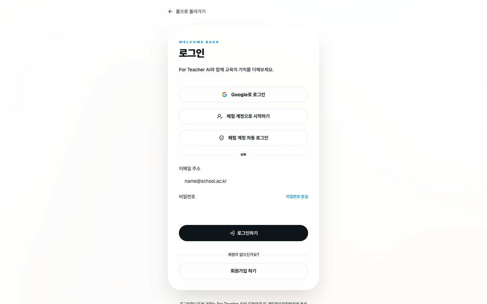
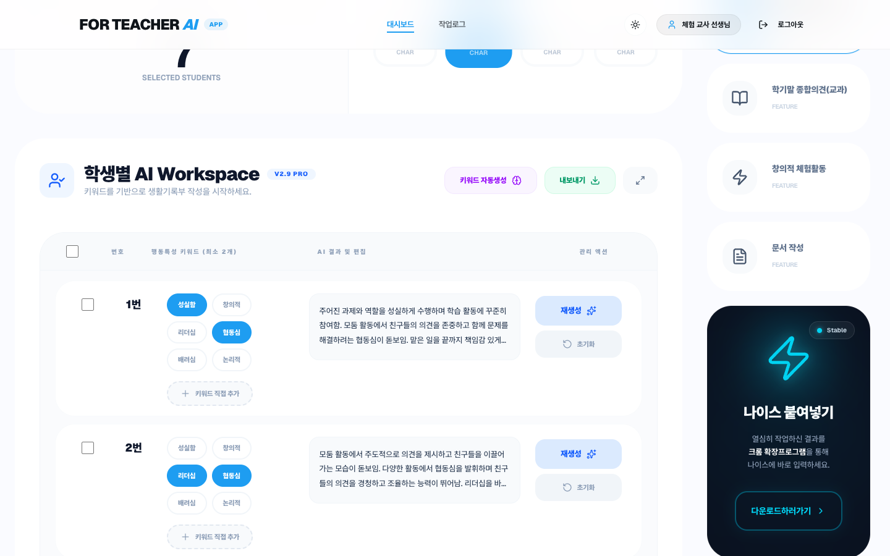
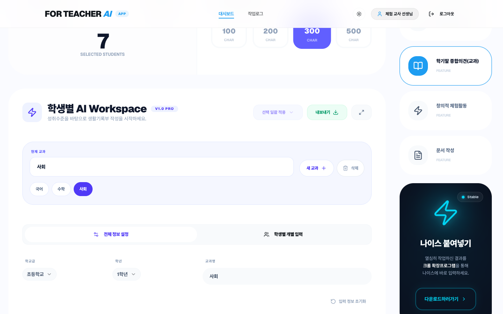
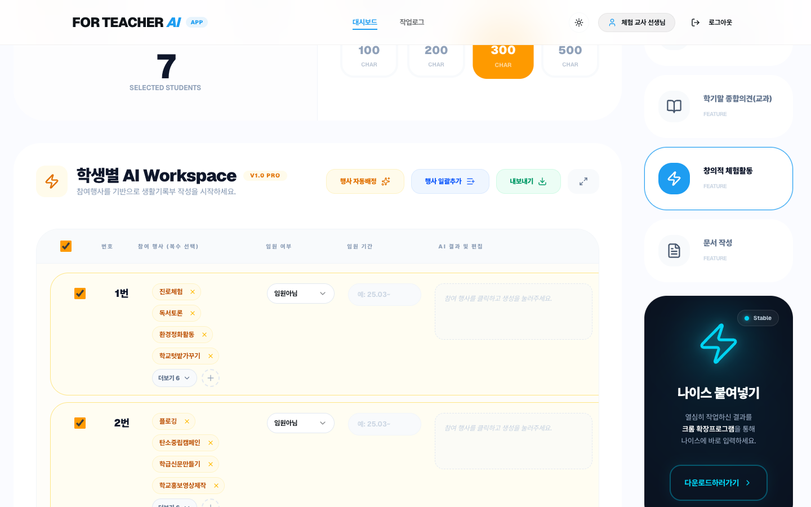
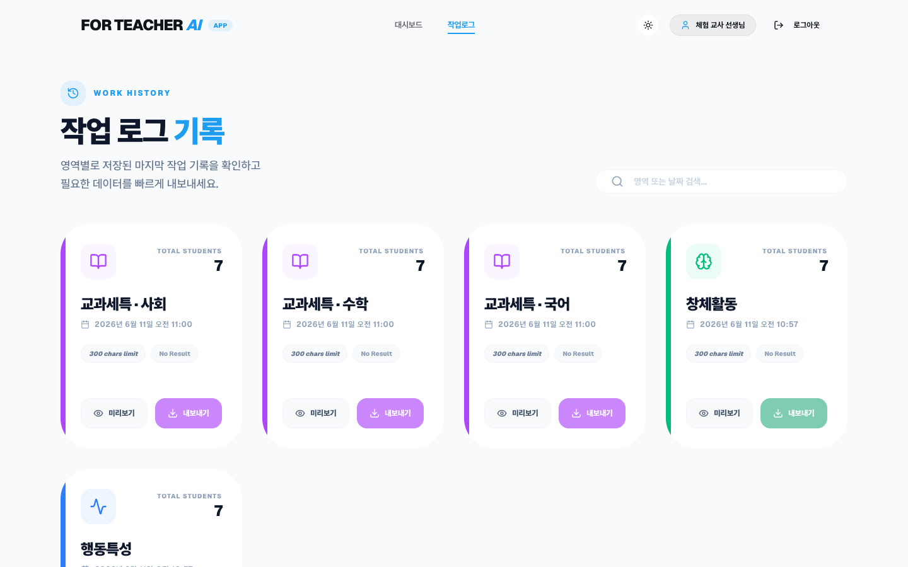
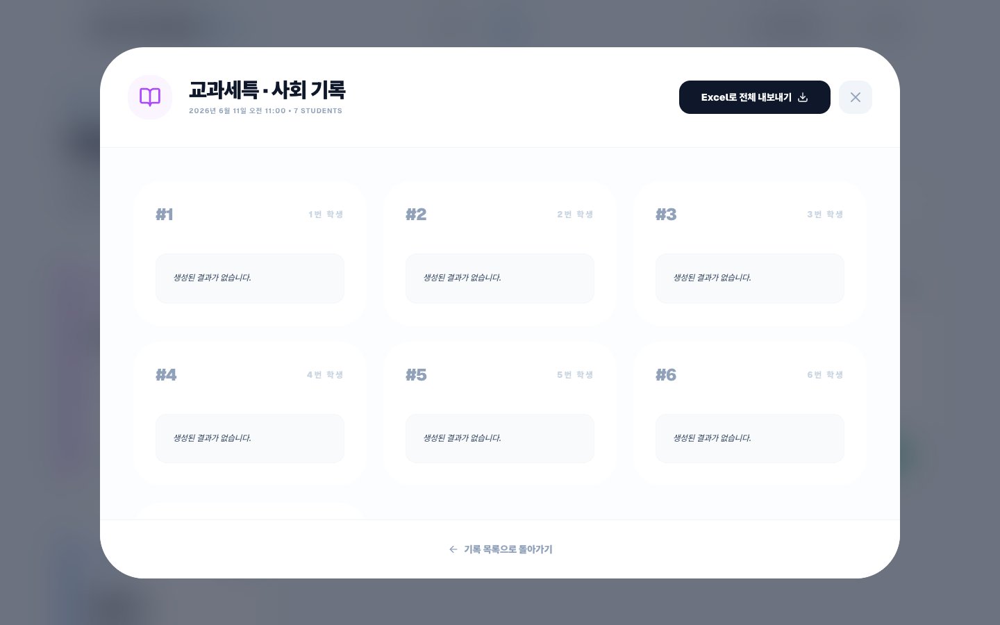

로그인

체험 계정
서비스 흐름을 바로 확인할 때 사용합니다.
이메일 로그인
가입한 이메일과 비밀번호로 접속합니다.
로그아웃
공용 기기에서는 작업 후 로그아웃합니다.
로그인, 행동특성 및 종합의견, 학기말 종합의견, 창의적 체험활동, 작업 로그, CSV 다운로드까지 한 번에 확인하세요.
체험 계정 또는 본인 계정으로 시작합니다.
행동특성, 교과, 창체 중 작성할 영역을 엽니다.
키워드, 평가, 행사, 특이사항을 입력합니다.
문장을 생성하고 필요한 표현을 수정합니다.
작업로그에서 저장본과 CSV를 확인합니다.

서비스 흐름을 바로 확인할 때 사용합니다.
가입한 이메일과 비밀번호로 접속합니다.
공용 기기에서는 작업 후 로그아웃합니다.

학생별로 최소 2개 이상의 키워드를 선택합니다.
생성 또는 전체 생성으로 결과 문장을 만듭니다.
펼쳐서 편집에서 문장을 바로 수정합니다.

국어, 수학, 사회처럼 교과별 저장본을 전환합니다.
학교급, 학년, 성취기준, 평가기준을 입력합니다.
성취수준과 특이사항을 넣고 문장을 생성합니다.

학생이 참여한 행사를 여러 개 선택합니다.
행사 자동배정과 행사 일괄추가로 반복 입력을 줄입니다.
필요한 학생에게 임원 여부와 기간을 입력합니다.


영역별 저장본과 최근 수정 시간을 확인합니다.
내보내기 버튼으로 다운로드 폴더에 파일을 저장합니다.
미리보기에서 문장과 학생 번호를 확인합니다.